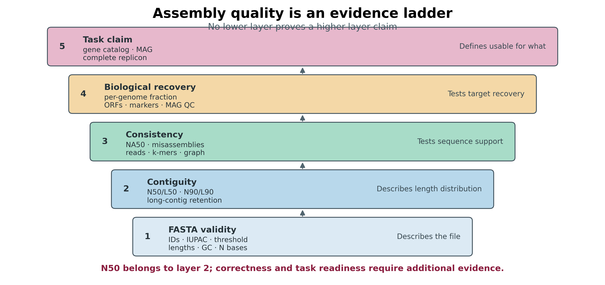
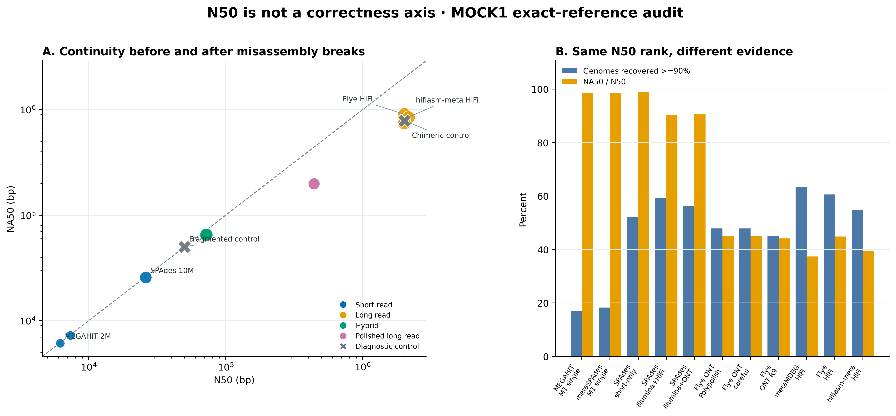
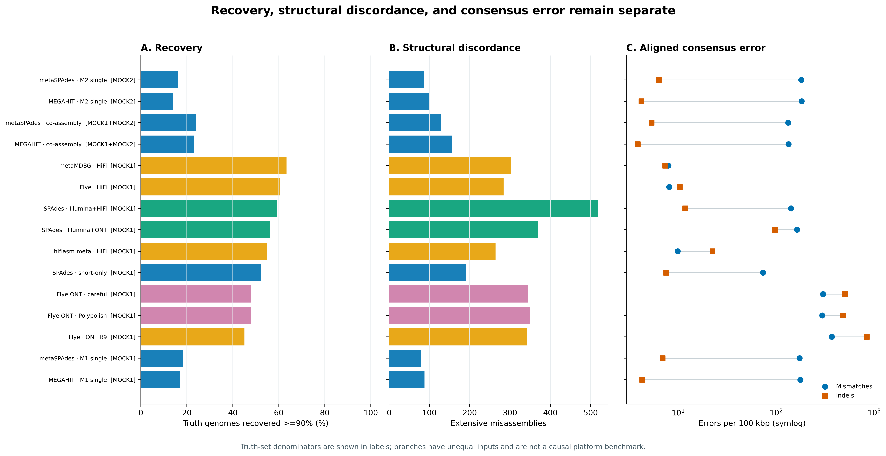
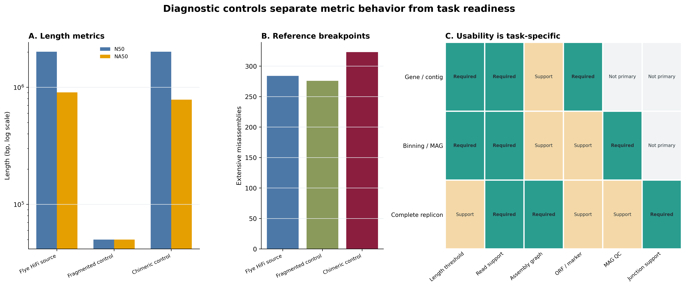

options(timeout = 600)
base_url <- "https://raw.githubusercontent.com/petemeng/metagenomics-best-practices/e219a2cd01609cc208a89e291cbd363ed7f2fbd8/"
files <- read.delim(paste0(base_url, "examples/33/files.tsv"))
for (i in seq_len(nrow(files))) {
path <- files$path[i]
dir.create(dirname(path), recursive = TRUE, showWarnings = FALSE)
if (!file.exists(path)) {
download.file(paste0(base_url, files$source[i]), path, mode = "wb")
}
}组装质控：QUAST、N50、contig 统计与可用性
学习目标：会读 QUAST/MetaQUAST 的 contig、N50/L50、NA50/LA50、genome fraction、duplication ratio、misassembly、mismatch/indel 与 unaligned 指标；能区分 reference-free 描述和 reference-aware correctness；能根据 gene-centric、binning/MAG 或完整 replicon 目标制定不同的可用性门槛。
真实数据：Meslier 等的PRJEB52977不均一 DNA mocks：MOCK1 含 71 strains，MOCK2 含 87 strains。输入是 15 个 checksum-identified assemblies：6 个短读 single/co、4 个长读、5 个 short/hybrid/polished 分支 (Meslier 等 2022年)。
结论边界：这些 workflows 的 read budget、平台、组装器和 community composition 并不相同；它们用于展示指标如何改变决策，不构成平台或算法的单因素因果比较。两个由真实 HiFi assembly 派生的诊断正控只检验指标语义，不能参与生物学排名。
提示先确定这一点
连续性不是正确性；把 reference-free 指标与有参考的结构、回收和碱基错误一起判断。
N50 很高的组装，为什么仍可能不能用？
锚定结果是 Meslier 等的 Table 3: Mock1 metaQUAST assembly report 与 Supplementary Table S2。原研究在同一已知 mock references 下同时报告 contig 数、N50、genome fraction、misassembly、每 100 kb mismatch/indel 和接近完整基因组数，避免用一项 contiguity 指标替代正确性 (Meslier 等 2022年)。本文沿用它的多参考评价思路，再把三个容易被忽略的问题拆开：统一 >=1 kb 报告门槛、N50 与 NA50 的差别，以及没有精确 reference 时还缺什么证据。
QUAST 同时支持无 reference 与有 reference 两种模式；MetaQUAST 再为多基因组混合物提供 combined-reference 和 per-reference 报告 (Gurevich 等 2013年; Mikheenko 等 2016年)。以下结果来自同一版本的 QUAST 5.3.0 输出。

重要先给结论：可用性必须带任务宾语
“这个 assembly 可用”不是完整结论。至少要补成“可用于 >=1 kb ORF catalog”“可进入 differential-coverage binning”“支持某个候选完整 replicon”，并为该任务列出仍需通过的 read、reference、gene、graph 或 MAG 证据。
下载本例数据与分析代码
数据与代码清单列出了本例的输入表、分析脚本和环境文件（约 742.3 MiB）。本清单不含原始 FASTQ 或大型数据库；是否需要它们取决于下文的分析起点。清单中的已计算结果仅供核对；读取结果表不等于重新运行统计模型或上游工具。
在新建文件夹中运行下面的 R 代码，下载完成后即可按正文中的相对路径读取文件。需要核验文件版本时，可使用带完整性检查的下载脚本。
先锁定输入、版本和算力边界
算力门槛
| 项目 | 本次统一评价 | 处理你自己的常规 assembly |
|---|---|---|
| CPU | 32 核 | 8–32 核；多个 assemblies/references 可受益于并行 |
| RAM | 建议 32–64 GB | reference-free 通常较低；多参考、大量 contigs 建议 64 GB 起 |
| 磁盘 | 冻结输入之外至少 40 GB | 预留 assemblies + references 的 3–5 倍；关闭不需要的 plots/Icarus |
| 耗时 | 以真实资源账本为准 | 从数分钟到数小时，取决于 contig 与 reference 数量 |
没有服务器时，先运行 reference-free QUAST；对已知 mock 只选 2–3 个 branches 检查命令。日常复核读取 checksum-locked 小表与图片，不重新对齐 245 个 reference evaluation units。自然样本不要为了“省算力”随便选一个近缘 reference 并把所有差异解释为错误。
环境配置与完整运行说明
# QUAST/MetaQUAST 5.3.0、Python 3.10.20 与 bundled minimap2 均由 lock 固定
mamba create -n metagenome-hybrid-2026.07 \
--file env/hybrid-assembly-linux-64.lock
conda run -n metagenome-hybrid-2026.07 quast.py --version
conda run -n metagenome-hybrid-2026.07 metaquast.py --version# 只取官方 reference/code；assemblies 已在 checksum-locked frozen bundles
bash scripts/download_article33_qc_sources.sh . data/raw/article33install.packages(c("ggplot2", "dplyr", "readr", "scales", "patchwork"))
library(ggplot2)
library(dplyr)
library(readr)
set.seed(20260733)
pal_pub <- c(
`Short read` = "#0072B2", `Long read` = "#E69F00",
Hybrid = "#009E73", `Polished long read` = "#CC79A7",
`Diagnostic control` = "#6C757D"
)
scale_color_pub <- function(...) scale_color_manual(values = pal_pub, ...)
scale_fill_pub <- function(...) scale_fill_manual(values = pal_pub, ...)
theme_pub <- function(base_size = 12) {
theme_bw(base_size = base_size) +
theme(
panel.grid.minor = element_blank(),
panel.grid.major.x = element_blank(),
axis.text = element_text(color = "black"),
strip.background = element_rect(fill = "#EEF3F5", color = NA),
legend.key = element_blank(),
plot.title.position = "plot"
)
}
save_pub <- function(plot, file_base, width = 180, height = 120,
units = "mm", dpi = 350) {
ggsave(paste0(file_base, ".pdf"), plot, width = width, height = height,
units = units, device = cairo_pdf)
ggsave(paste0(file_base, ".png"), plot, width = width, height = height,
units = units, dpi = dpi, bg = "white")
ggsave(paste0(file_base, ".tiff"), plot, width = width, height = height,
units = units, dpi = dpi, compression = "lzw", bg = "white")
invisible(plot)
}输入身份与比较分母
input-lineage.tsv 对每个 compressed FASTA 先核对上游 checksum manifest，再记录 canonical sequence hash。15 个 biological branches 分为三个独立 truth universes：
column -t -s $'\t' data/small/33-source-manifest.tsv
column -t -s $'\t' data/small/33-software-releases.tsv| Evaluation set | Biological branches | Diagnostic controls | Truth genomes | 允许的比较 |
|---|---|---|---|---|
| MOCK1 | 11 | 2 | 71 | 同一 71-genome denominator 下的描述性 workflow audit |
| MOCK2 | 2 | 0 | 87 | 两个 2M-pair single-sample short-read workflows |
| MOCK1+MOCK2 | 2 | 0 | 87 | 两个 4M-pair co-assembly workflows；union 等于 MOCK2 membership |
MOCK1 是 MOCK2 的严格子集。Co-assembly 的 abundance-bin 图用两份 mock 预期 DNA 百分比的算术均值描述输入难度；它不是实测 coverage，也不能与 single branch 的 abundance 直接合并建模。
核对上游 bundle，不读取 FASTQ
cd /path/to/metagenomics-best-practices
for bundle in \
data/small/30-short-read-assembly-frozen \
data/small/31-long-read-assembly-frozen \
data/small/32-hybrid-assembly-polishing-frozen; do
(cd "$bundle" && sha256sum -c file-checksums.sha256)
done输入准备器只选择 15 个非重复 biological FASTA。Flye ONT 与 Flye HiFi 在两个上游 bundle 中序列相同，只保留一份；随后生成两个 diagnostic controls，并证明其 base/length invariants。
PROJECT_ROOT="$PWD"
QC_ENV_PREFIX="$HOME/miniconda3/envs/metagenome-hybrid-2026.07"
BENCHMARK_REPO="data/raw/article33/benchmark_mock"
WORK="data/raw/article33/work"
"${QC_ENV_PREFIX}/bin/python" scripts/prepare_article33_qc_inputs.py \
--project-root "$PROJECT_ROOT" \
--benchmark-repo "$BENCHMARK_REPO" \
--work-dir "$WORK"
column -t -s $'\t' "$WORK/summary/input-lineage.tsv" | head忠实保留原研究的多参考逻辑
原研究用 MetaQUAST 4.6.3、--min-alignment 500 --fragmented --min-identity 97 --split-scaffolds 评价 MOCK1，并在 Table 3 同时展示 contiguity、recovery、misassembly 与 consensus error (Meslier 等 2022年)。当前重算升级到 QUAST/MetaQUAST 5.3.0，但保留这些核心语义；所有版本、bundled aligner 与参数写进 Methods。
用 diagnostic controls 验证指标，而不是为图制造效果
Fragmented control 保留全部 bases，却主动降低 N50；chimeric block-rotation control 保留总 bases 与完整 length multiset，使 N50 不变，却破坏 reference adjacency。只有在这些预期方向通过时，才说明解析器与图真正区分了 continuity 和 correctness。
先跑 reference-free QUAST
没有 ground truth 时，QUAST 只能完成证据的一部分
自然群落通常没有完全匹配的 reference set。此时 reference-free contig/Nx/GC/N 统计仍有用，但 correctness 要由 reads 回帖、insert/coverage 异常、assembly graph、k-mer consistency、gene/marker recovery、MAG completeness/contamination/chimera 等正交证据补齐 (Olson 等 2019年)。让 MetaQUAST 自动找“近似 reference”可以辅助探索，但不能把物种内真实结构差异静默改名为 assembler error。
点开：两个确定性正控为什么能拆穿 N50 误读
诊断源是同一份真实 Flye HiFi assembly。
- Fragmented control：每 50,000 bp 固定切开，末段不足 1 kb 时并回前一段。全部 bases 保留，N50 明显下降；这检验“低 N50 是否必然意味着碱基更错”。
- Chimeric control：按 length-descending/name-ascending 固定选 20 条最长 eligible contigs，在每条中央取 100,000 bp block，并在 20 条 contigs 间循环置换。总 base multiset 与完整 contig-length multiset 不变，所以 N50 精确不变；reference adjacency 被主动破坏。
这不是模拟新的 community，也不进入 15 个 biological workflows 的 correlation 或排名。其唯一用途是对指标做阳性控制。
mapfile -t BRANCHES < <(
"${QC_ENV_PREFIX}/bin/python" -c \
'import csv,sys; print("\n".join(r["Branch"] for r in csv.DictReader(open(sys.argv[1]), delimiter="\t")))' \
"$WORK/summary/input-lineage.tsv"
)
ASSEMBLIES=()
for branch in "${BRANCHES[@]}"; do
ASSEMBLIES+=("$WORK/assemblies/${branch}.fasta")
done
LABELS="$(IFS=,; printf '%s' "${BRANCHES[*]}")"
"${QC_ENV_PREFIX}/bin/quast.py" \
--threads 32 --min-contig 1000 \
--no-icarus --no-plots --space-efficient --report-all-metrics \
--labels "$LABELS" \
"${ASSEMBLIES[@]}" \
-o "$WORK/quast"--report-all-metrics 让机器解析时行集合保持稳定；--no-plots --no-icarus 只关闭不进入出版物的内置图，不改变表格指标。保留 report.tsv 与 transposed_report.tsv，不要只截图 HTML。
统一 1 kb threshold，并把 500 bp 差异公开
论文原命令使用 500 bp；这里的 15 个冻结 assemblies 已在 1 kb 共同门槛标准化。这样可避免某个分支保留更多 500–999 bp contigs 而改变分母，也与后续 gene/contig 工作流衔接。它不是“1 kb 为普适优质 contig”的声明；length-threshold-sensitivity.tsv 另存 10 kb/100 kb retained bases。
注意坑 2：不同 min-contig 门槛直接横比
500 bp、1 kb、1.5 kb 或 2.5 kb 会改变 contig 数、total length、N50、GC 和 downstream ORFs。统一主门槛，另做 sensitivity，并在 Methods 写清过滤发生在 QUAST 前还是由 --min-contig 完成。
按 truth universe 分三次运行 MetaQUAST
for EVAL_SET in MOCK1 MOCK2 'MOCK1+MOCK2'; do
SAFE_SET="${EVAL_SET//+/_}"
mapfile -t GROUP_BRANCHES < <(
"${QC_ENV_PREFIX}/bin/python" -c \
'import csv,sys; print("\n".join(r["Branch"] for r in csv.DictReader(open(sys.argv[1]), delimiter="\t") if r["EvaluationSet"] == sys.argv[2]))' \
"$WORK/summary/input-lineage.tsv" "$EVAL_SET"
)
GROUP_ASSEMBLIES=()
for branch in "${GROUP_BRANCHES[@]}"; do
GROUP_ASSEMBLIES+=("$WORK/assemblies/${branch}.fasta")
done
GROUP_LABELS="$(IFS=,; printf '%s' "${GROUP_BRANCHES[*]}")"
REFERENCE_CSV="$(find "$WORK/truth/references/$EVAL_SET" \
-maxdepth 1 -type l -name '*.fna.gz' -print | sort | paste -sd, -)"
"${QC_ENV_PREFIX}/bin/metaquast.py" \
--min-alignment 500 --fragmented --min-identity 97 \
--split-scaffolds --threads 32 --min-contig 1000 \
--no-icarus --no-plots --space-efficient --report-all-metrics \
-r "$REFERENCE_CSV" \
"${GROUP_ASSEMBLIES[@]}" \
--labels "$GROUP_LABELS" \
-o "$WORK/metaquast/$SAFE_SET"
done--fragmented 告诉 QUAST 某些 reference genomes 自身由多个 scaffolds 构成，避免把 reference fragment 边界全部当成 assembly error。--split-scaffolds 产生的 *_broken 列只进入 sensitivity 表，不能混成额外 biological branch。
展开所有 reference × branch 组合
combined report 与 per-reference report 是两个层级
Combined-reference report 适合看整个 mock 的 assembled length、结构错误和总体错误率；per-reference report 才能回答低丰度 genome 是否恢复、哪个 genome 达到 >=90% 或 >=99%。MetaQUAST 可能不为完全未命中的 reference/branch 写物理列；标准化长表必须补出 reference × branch 的显式 0 recovery，错误率则因没有对齐分母保留 NA。
"${QC_ENV_PREFIX}/bin/python" scripts/summarize_article33_assembly_qc.py \
--work-dir "$WORK" \
--output-dir "$WORK/summary"
column -t -s $'\t' "$WORK/summary/branch-metrics.tsv" | head
column -t -s $'\t' "$WORK/summary/diagnostic-control-effects.tsv"汇总器要求 17 条 branch metrics 与 1,271 条 reference × branch 记录：13×71 + 2×87 + 2×87。物理 per-reference report 缺列时，recovery 明确补 0，mismatch/indel 留 NA。
不以一个 nearby reference 宣判自然样本
Known mock 可以把 exact source genomes 当 truth。临床或环境样本常只有 same-species/nearby strain reference；此时 translocation、inversion 和 mismatch 可能是生物差异。升级方案是：
- reference-free QUAST 固定 FASTA/长度/N 指标；
- reads 回帖检查 coverage drop、discordant pairs、soft clips 与 k-mer consistency；
- 用 assembly graph 核对争议 junction；
- 根据目标报告 ORF/marker、bin/MAG、virus/plasmid 或 complete-replicon 证据；
- 若用 reference，明确 exact、same-strain、same-species 还是 distant，并做多 reference sensitivity。
注意坑 4：只报 combined reference
总体 genome fraction 会被高丰度 genomes 主导。必须保留每个 reference 的 recovery，尤其单列 <0.1%、0.1–<1% 与 >=1% 难度层。
注意坑 5：把未对齐序列排除在错误叙事之外
Mismatch/indel rate 只对 aligned bases 有分母。一个分支可以 aligned error 很低，却留下大量 fully unaligned contigs；同时报告 unaligned contigs/length 与 reference suitability。
注意坑 6：用近缘 reference 把真实 SV 当错误
Reference-aware misassembly 是“与当前 reference/参数不一致”，只有 exact truth 才接近 assembler correctness。自然样本必须说明 reference 距离，并用 reads 与 graph 辅助判定。
完整运行、一次性保存与日常离线复核
服务器上的正式运行直接调用同一个封装入口；它用完成标记复用已成功的 QUAST/MetaQUAST 目录，并在每次重计算前删除 .partial 目录：
scripts/run_article33_assembly_qc.sh \
--project-root "$PROJECT_ROOT" \
--qc-prefix "$QC_ENV_PREFIX" \
--benchmark-repo "$BENCHMARK_REPO" \
--work-dir "$WORK" \
--threads 32完整运行通过后，只固化小表、报告、可移植日志、资源账本与脚本；原始 FASTQ、准备后的 assemblies 和完整 QUAST 工作目录不进入 Git。仓库已提供的 data/small/33-assembly-qc-frozen 不应被覆盖，因此从头复算时写入一个新的候选目录，验收后再由维护者替换版本：
FROZEN_CANDIDATE="data/small/33-assembly-qc-frozen-rebuilt"
test ! -e "$FROZEN_CANDIDATE"
"${QC_ENV_PREFIX}/bin/python" scripts/freeze_article33_assembly_qc.py \
--project-root "$PROJECT_ROOT" \
--env-prefix "$QC_ENV_PREFIX" \
--benchmark-repo "$BENCHMARK_REPO" \
--work-dir "$WORK" \
--frozen-dir "$FROZEN_CANDIDATE"
PYTHONNOUSERSITE=1 PYTHONPATH= MPLCONFIGDIR=/tmp/article33-mpl \
"${QC_ENV_PREFIX}/bin/python" scripts/validate_article33_assembly_qc.py \
--project-root "$PROJECT_ROOT" \
--env-prefix "$QC_ENV_PREFIX" \
--frozen-dir data/small/33-assembly-qc-frozen \
--output-dir results/33-assembly-qc \
--figure-dir figures \
--chapter chapters/33-assembly-qc.qmd日常复核只需最后一条验证命令：它重新核对 45 个 payload checksums、15 个上游 compressed FASTA identities、锁定指标、正控不变量、正文合同和 12 个图文件，不重跑 MetaQUAST，也不访问网络。
真实结果
N50/L50 是 assembly 自身的长度分布
把通过共同门槛的 contig 长度从大到小排列为 \(l_1\ge l_2\ge\cdots\ge l_n\)。当累计长度第一次达到 assembly 总长度的一半时：
\[ N50=l_j,\qquad L50=j,\qquad \sum_{i=1}^{j-1}l_i<0.5\sum_{i=1}^{n}l_i\le\sum_{i=1}^{j}l_i. \]
N50 越大表示一半 assembly bases 集中在更长的 contigs；L50 越小表达同一件事的另一面。它们不读取 reference、reads、基因或 taxonomy，因此无法知道长 contig 是否拼错、是否重复、是否来自污染物，也无法知道未组装基因组有多少。
门槛是指标的一部分。--min-contig 500 与 --min-contig 1000 可能产生不同 total length、N50 和 GC；比较前必须统一过滤规则，Methods 也必须写出门槛。本文所有主指标固定为 >=1,000 bp，并另报 >=10 kb、>=100 kb retained bases。
NG50 需要 reference size；NA50 会在错误处打断 alignment blocks
NG50 的分母是 reference length，而不是 assembly length。若 assembly 覆盖不到 reference 的 50%，NG50 可以是未定义；这正是信息，不应改填 0 或 N50。
NA50 先把 contigs 在 extensive misassembly breakpoints 处切成 aligned blocks，再对 blocks 算 N50；NGA50 进一步用 reference length 作分母。于是：
- N50 高、NA50 也高：长 contig 在当前 reference/参数下大体保持长 alignment blocks；
- N50 高、NA50 大幅下降：continuity 被 reference-aware breakpoints 折损；
- N50 低、base error 低：可能只是 assembly 被打碎，不等于 consensus 不准；
- reference 不匹配：真实 structural variation 也可能被记成 misassembly。
QUAST 5.3.0 默认把相邻 flank 在 reference 上相距或重叠超过 1 kb、方向不一致、落到不同 chromosome，或在 MetaQUAST 中落到不同 reference genome 的 breakpoint 计入 extensive misassembly；这些语义依赖版本和参数，不能跨报告盲比。
genome fraction、duplication 与错误率不能互相替代
Genome fraction 是 reference 被至少一个 assembly alignment 覆盖的比例；它可以由多个碎片共同达到 99%，所以 >=99% 只是 operational recovery threshold，不证明单 contig、闭环、无错或无污染。
Duplication ratio 比较 aligned assembly bases 与 covered reference bases。大于 1 可能来自重叠 contigs、重复 haplotype/strain paths 或真正 duplication；小于或接近 1 也不能证明没有 collapse。
Mismatches/indels per 100 kbp 只在 aligned denominator 内计算。完全未对齐的 contigs 不会自动让这一错误率升高，因此必须同时看 unaligned length。相反，assembly 与近缘但非同一株 reference 的真实差异也会进入 mismatch/indel。
同一 71-genome MOCK1 denominator 下，N50 最大的是 hifiasm-meta HiFi（2,154,824 bp），但它不是 recovery 最大的分支：metaMDBG HiFi 的总体 genome fraction 为 72.573%，恢复 45/71 个 >=90% genomes；Flye HiFi 恢复 43/71，却有最多的 >=99% genomes（36/71）。三者分别回答“最长”“总体恢复最多”“接近完整成员最多”，不能合并为一个冠军。
| MOCK1 biological workflow | N50 (bp) | NA50 (bp) | Genome fraction (%) | Misassemblies | Mismatch / 100 kbp | Indel / 100 kbp | Genomes >=90% | Genomes >=99% |
|---|---|---|---|---|---|---|---|---|
| MEGAHIT · M1 single, 2M | 6,197 | 6,110 | 24.072 | 88 | 177.22 | 4.31 | 12 | 4 |
| metaSPAdes · M1 single, 2M | 7,353 | 7,255 | 25.350 | 79 | 173.77 | 6.94 | 13 | 5 |
| SPAdes · short-only, 10M | 26,020 | 25,703 | 59.717 | 192 | 73.69 | 7.58 | 37 | 12 |
| SPAdes · Illumina+ONT | 72,626 | 65,930 | 64.653 | 370 | 163.70 | 97.21 | 40 | 22 |
| SPAdes · Illumina+HiFi | 72,242 | 65,182 | 69.266 | 517 | 142.46 | 11.82 | 42 | 28 |
| Flye · ONT R9 | 441,240 | 194,794 | 51.572 | 343 | 370.94 | 839.52 | 32 | 24 |
| Flye ONT · Polypolish | 440,931 | 198,296 | 53.149 | 350 | 296.44 | 481.12 | 34 | 24 |
| Flye ONT · careful | 440,979 | 198,300 | 53.066 | 345 | 301.49 | 503.70 | 34 | 24 |
| Flye · HiFi | 2,013,697 | 903,979 | 70.125 | 284 | 8.11 | 10.42 | 43 | 36 |
| hifiasm-meta · HiFi | 2,154,824 | 847,090 | 68.678 | 264 | 9.93 | 22.47 | 39 | 28 |
| metaMDBG · HiFi | 2,007,072 | 749,991 | 72.573 | 303 | 7.98 | 7.40 | 45 | 33 |
这 11 条 workflows 的描述性 Spearman 相关也说明 N50 不是 correctness 代理：N50 与 NA50 的 \(\rho=0.964\)，但与 genome fraction、>=90% recovery 和 misassembly 的 \(\rho\) 分别只有 0.609、0.560 和 0.227。输入预算和工具链同时变化，因此这些相关只描述当前 workflow set，不是平台因果效应。
MOCK2 single 与 co-assembly 使用 87-genome denominator。Co branches 的输入从单个 mock 的 2M pairs 增至两份 mock 合计 4M pairs，community composition 也随之改变；只能把它们读作工作流结果。
| Short-read workflow | Evaluation set | N50 (bp) | Genome fraction (%) | Misassemblies | Genomes >=90% | Genomes >=99% |
|---|---|---|---|---|---|---|
| MEGAHIT · M2 single | MOCK2 | 5,906 | 19.275 | 100 | 12/87 | 4/87 |
| metaSPAdes · M2 single | MOCK2 | 6,781 | 20.286 | 87 | 14/87 | 5/87 |
| MEGAHIT · co-assembly | MOCK1+MOCK2 | 15,928 | 29.523 | 155 | 20/87 | 6/87 |
| metaSPAdes · co-assembly | MOCK1+MOCK2 | 17,124 | 30.953 | 129 | 21/87 | 5/87 |
两个正控提供了更直接的反例。Fragmentation 把 N50 从 2,013,697 bp 降到 50,000 bp，却保留全部 169,457,769 bases、43 个 >=90% 和 36 个 >=99% genomes；总体 genome fraction 仍为 70.129%。Chimeric rotation 让 N50/L50 精确保持 2,013,697 bp/22，genome fraction 与 mismatch/indel 也几乎不动，但 misassemblies 从 284 增到 323，NA50 从 903,979 bp 降到 783,687 bp（−13.3%）。这正是“同一个 N50，可以更错”的确定性证据。
| Evaluation step | Wall time | Peak RAM |
|---|---|---|
| Reference-free QUAST, 17 branches | 2:22 | 1.46 GiB |
| MetaQUAST, MOCK1 | 9:47 | 2.03 GiB |
| MetaQUAST, MOCK2 | 3:09 | 2.29 GiB |
| MetaQUAST, MOCK1+MOCK2 | 3:26 | 2.36 GiB |
四次评价合计 18:45，Article 33 工作目录最终约 2.8 GB；这个数字不含三个上游 frozen assembly bundles。三次 MetaQUAST 均为 0 warning、0 non-fatal error。


任务门槛必须预注册
| Target | 最低起点 | 不能省略的升级证据 | 禁止的捷径 |
|---|---|---|---|
| Gene / contig-centric | 明确 contig threshold；检查 partial ORFs | read support、ORF yield、annotation coverage、短 contig sensitivity | 只因 N50 高就认为 gene catalog 更完整 |
| Binning / MAG | 与分箱器一致的最短 contig；coverage matrix | differential coverage、composition、CheckM2、GUNC、graph/人工检查 | 把 assembly N50 当 MAG completeness |
| Complete replicon | 候选 contig span 与 topology | junction-spanning reads、均匀 coverage、无冲突 graph、base polishing、taxonomy | circular=true 或 genome fraction 99% 就称 complete |

注意坑 1：按 N50 选冠军
错误拼接可以抬高 N50；真实低丰度碎片可以拉低 N50。至少同时给 NA50、misassembly、genome fraction、unaligned length 与 aligned consensus error。
注意坑 3：把 99% genome fraction 写成完整闭环基因组
99% 可以由多个 contigs、重复 alignments 或含错误的序列共同达到。完整 replicon 还需单一 span、末端/junction 证据、coverage、graph 与 consensus 审计。
注意坑 7：把 co-assembly 的额外 community 当 contamination
若只给 MOCK1 references，MOCK1+MOCK2 co-assembly 中合法的 MOCK2-only contigs 会变成 unaligned。本文用 87-genome union 评价 co branches，并始终显示 denominator。
按分析目标报告组装质量
Fifteen checksum-identified biological metagenome assemblies derived from the uneven PRJEB52977 MOCK1 and MOCK2 DNA communities were evaluated. The input set comprised six short-read single/co-assemblies, four long-read assemblies, and five non-duplicated short-read, hybrid, or polished assemblies. Compressed FASTA SHA-256 values were verified against their frozen source-bundle manifests before decompression. All primary statistics used contigs >=1,000 bp. Two prespecified diagnostic transformations of the real Flye HiFi assembly were evaluated separately and excluded from biological workflow comparisons: deterministic fragmentation at 50,000 bp and rotation of one central 100,000-bp block among the 20 longest eligible contigs (seed namespace 20260733). The latter preserved the complete contig-length and base multisets.
Reference-free metrics were computed with QUAST 5.3.0. Reference-aware evaluation used MetaQUAST 5.3.0 and its bundled minimap2 2.28-r1209 with
--min-alignment 500,--min-identity 97,--fragmented,--split-scaffolds,--min-contig 1000,--report-all-metrics, and 32 threads. MOCK1 assemblies were evaluated against 71 exact source genomes; MOCK2 single assemblies and MOCK1+MOCK2 co-assemblies were evaluated against 87 exact source genomes. MOCK1 membership was verified as a strict subset of MOCK2, and per-genome reference sequence multisets were required to equal the official combined FASTA files from benchmark repository commit a429a3724d4593f35b8d7323b20252a6be90e1cd. Primary summaries retained original assembly labels; scaffold-split columns were reported only as sensitivity analyses. Missing reference-by-assembly report entries were encoded as zero genome recovery, while mismatch and indel rates remained missing when no aligned denominator existed. Genome recovery thresholds of >=90% and >=99% were operational reporting criteria and were not interpreted as proof of complete, closed, or error-free replicons. N50, NA50, genome fraction, duplication ratio, misassemblies, unaligned sequence, mismatches, and indels were reported separately; no composite score or universal usability threshold was applied.
请把方括号内容替换为你的 cohort、样本、assembler、read budget、contig threshold、reference provenance、QUAST 版本、线程和任务门槛。若没有 exact truth，删去“correctness”措辞，改写为 reference-free/read-supported validation，并报告 reference 与样本的关系。
换到自己的研究中，先检查哪些条件？
先写目标，再选门槛
Primary target: gene catalog | binning/MAG | complete replicon | virus/plasmid
Assembly unit: per sample | biologically matched co-assembly
Minimum contig for QC: ____ bp
Minimum contig for downstream tool: ____ bp
Exact truth available: yes | no
Read evidence retained: paired short | ONT | HiFi | none
Reference relationship: exact | same strain | same species | distant | none建立 assembly manifest
SampleID Assembly Assembler Version InputReads MinContigBp SHA256
S01 assemblies/S01.fasta MEGAHIT 1.2.9 clean/S01_R1.fastq.gz;clean/S01_R2.fastq.gz 1000 ...不要从目录 glob 推断 label 顺序；FASTA 与 --labels 用同一 manifest 生成。记录组装前后的过滤门槛，避免把 assembler native output 与二次过滤混为一谈。
没有 exact truth 的最小证据包
- QUAST reference-free：contigs、total length、largest、N50/L50、N90/L90、GC、N、length-threshold sensitivity；
- Reads：mapped fraction、proper/discordant、coverage distribution、zero-coverage regions、soft clips 或 k-mer consistency；
- Graph：争议 junction、repeat/strain bubbles、circular junction；
- Gene/MAG：与主要目标匹配的 ORF/marker recovery，或 CheckM2 + GUNC + contig/coverage/graph 记录；
- Provenance：FASTA SHA-256、assembler/版本、参数、数据库/reference release、资源账本。
何时停止继续“优化 N50”
若 N50 上升但 NA50、read consistency、gene recovery 或 MAG quality 不升反降，应停止把 graph simplification 调得更激进。最终选择应服务预注册的 downstream target，并保留至少一个替代 assembly 作为敏感性分析，而不是不断调参直到某一项指标最好看。
图中应该保留哪些信息？
N50 与 NA50 用同一 log scale，不画双轴
N50/NA50 跨 3 个数量级，用相同的 log10 axes 和 y=x 参照线。点的颜色表示 workflow family，形状区分 biological/diagnostic；点大小承载 genome fraction。不要用双 y 轴把 recovery 与 N50 强行叠在一起。
错误率和 recovery 分面，不组成总分
Genome fraction 越高越好，misassembly/mismatch/indel 越低越好，方向不同且量纲不同。主图使用分面或并列 panel，保留原单位；不做未经验证的加权“assembly quality score”。
所有图内标签固定英文
图内只使用 N50 (bp)、NA50 (bp)、Genome fraction (%)、Misassemblies、Mismatches per 100 kbp、Indels per 100 kbp、Biological workflow、Diagnostic control 等英文。分支名缩短用于作图，完整工具/版本/输入预算保留在表格与 Methods。
同时导出 PDF、PNG 与 TIFF
四张图固定白底、colorblind-safe palette、300 dpi 以上；PDF 用于矢量排版，PNG 用于网页，LZW TIFF 用于投稿。图片验收同时检查尺寸、DPI、RGB/RGBA、英文字符与边界裁切。
回到最初的问题
N50 只描述长度分布，不是正确率。本文用 15 个真实 assembly 分支、71/87 个已知 mock references 和两个确定性诊断正控，把 contiguity、NA50、genome fraction、misassembly 与任务门槛放进同一套审计。
参考文献
- Meslier 等的真实 mock、Table 3、Supplementary Table S2 与公开 accession：(Meslier 等 2022年)
- QUAST 的 assembly 评价框架：(Gurevich 等 2013年)
- MetaQUAST 的多参考宏基因组评价：(Mikheenko 等 2016年)
- 无精确真值时的 metagenome assembly validation 证据框架：(Olson 等 2019年)
- QUAST 5.3.0 manual：https://quast.sourceforge.net/docs/manual.html
- Author benchmark repository（commit
a429a3724d4593f35b8d7323b20252a6be90e1cd）：https://forgemia.inra.fr/metagenopolis/benchmark_mock